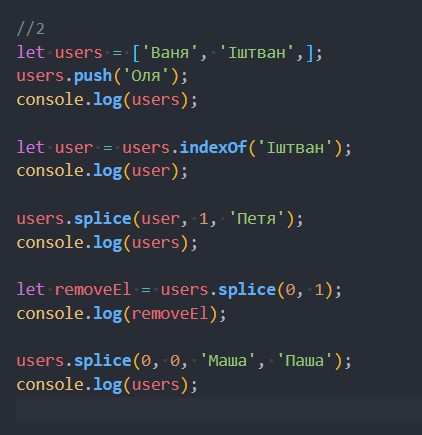
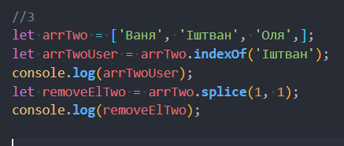
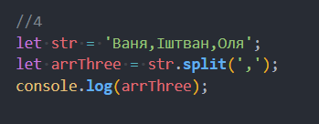

Функції
- №1 Коля буде першим, оскільки setTimeout поставить на затримку функцію showName, і вона буде виконуватись після решти коду який буде.
- №2 Функція записана правильно
- №3 Буде помилка, оскільки функція викликана до її створення.
- №4 Функція викликана в режимі 'use strict' за межами блоку if. Переносимо виклик функції showMessage(); всередину блоку.
Масиви
- №1 Довжина масиву буде 4. Спочатку ми мали три елементи масиву, потім добавили ще один (newArr.push('Петя');).
- №2 
- №3 
- №4 
- №5 arrTwo не заданий, тому помилка. Але якщо його задати, то previousValue буде дорівнювати першому елементу масиву, оскільки початкове значення не задано.
DOM
Привіт!
- Корчі
- Йончі
- №4 Потрібно змінити querySelectorAll на querySelector, інакше буде помилка. Текст вставиться перед закриваючим тегом ul.
Scroll код в js